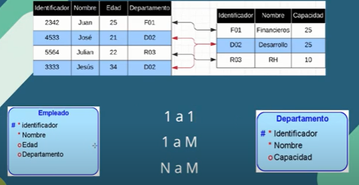

BASE DE DATOS
COMO HACER UNA BASE DE DATOS
FASES
- planeacion y analisis
- desarrollo
- pruebas/correcciones
- puesta en marcha
EL MODELO ENTIDAD/RELACION
¿QUE ES?
Es el modelo usado para construir bases de datos relacionales,
permite reprensentar de manera simple los componentes que
participan en un proceso de negocio
USOS
Nos permite generar diagramas que ayudan a generar la
estructura de los datos con la que se trata un problema
IMPORTANCIA
La mayoria de las basees de datos creadas usan este modelo
adaptando como lenguaje es estandar SQL
INFORMACION ORGANIZADA EN TABLAS
Estas tablas contienen registros o filas cada fia contiene campos
o columnas
mi nota:
una entidad es una tabla :)
ELEMNTOS DEL MODELO ENTIDAD RELACION
ENTIDADES
DE LO QUE SE VA HABLAR
Representan cosas u objetos de la vida real sean
cosas reales(como la informacion de un coche) o
abstractas(como el puesto de un empleado), estas
siempre son diferentes unas de otras
ATRIBUTOS
CARACTERISTICAS DE LO QUE SE HABLA
Son todos aquellos componentes o cualidades que conforman y definen
a una entidad, estos datos hacen que una instancia de una entidad sea
diferente a otra instancia
mi nota:
una instancia es un registro
RELACIONES
LO QUE UNE LO QUE SE HABLA
Vinculo que permite definir una dependencia entre
las entidades. Existen varios tipos de relaciones posibles
CARDINALIDAD DE RELACIONES
1 a 1
una entidad junto a otro
1 a M
una entidad junto con muchas
N a M
muchas entidades junto con muchas mas
LLAVE PRIMARY - PRIMARY KEY
IDENTIFICADOR UNICO
Propiedad que hace que el valor de un campo o columna
sea único y no se pueda repetir
ENTIDAD: EMPLEADO
LLAVE FORÁNEA - FOREIGN KEY
IDENTIFICADOR DE OTRO IDENTIFICADOR UNICO
Propiedad que hace referencia a la llave primaria de otra tabla
ENTIDAD: EMPLEADO -------------------------------------------------- ENTIDAD: DEPARTAMENTO
mi nota:
este sitio web no tiene el proposito de que usted aprenda a diseñar
modelos entidad-relacion
ENTIDAD RELACION MODO ORACLE

la tercera relacion de muchos a mucho no tiene mucho sentido
asi que lo descartamos.
La opcion ideal seria un departamento tiene muchos empleados 1 - M
este grafico es de manera mas intuitiva(esta relacion es obligatoria)

este grafico es opcional para la relacion empleado, el departamento puede tener
uno o mas empleados
Este grafico es opcionla para cada lado.
¿QUE ES SQL?
STRUCTURED QUERY LANGUAGE
Lenguaje desarrollado para poder creaar bases de datos,
ingresar y manipular la informacion dentro de estas.
Para usar SQL vamos a necesitar un gestor de bases de datos,
como por ejemplo:
Xammp
Si quieres seguir aprendiendo sigue este video de youtube.
Gracias.